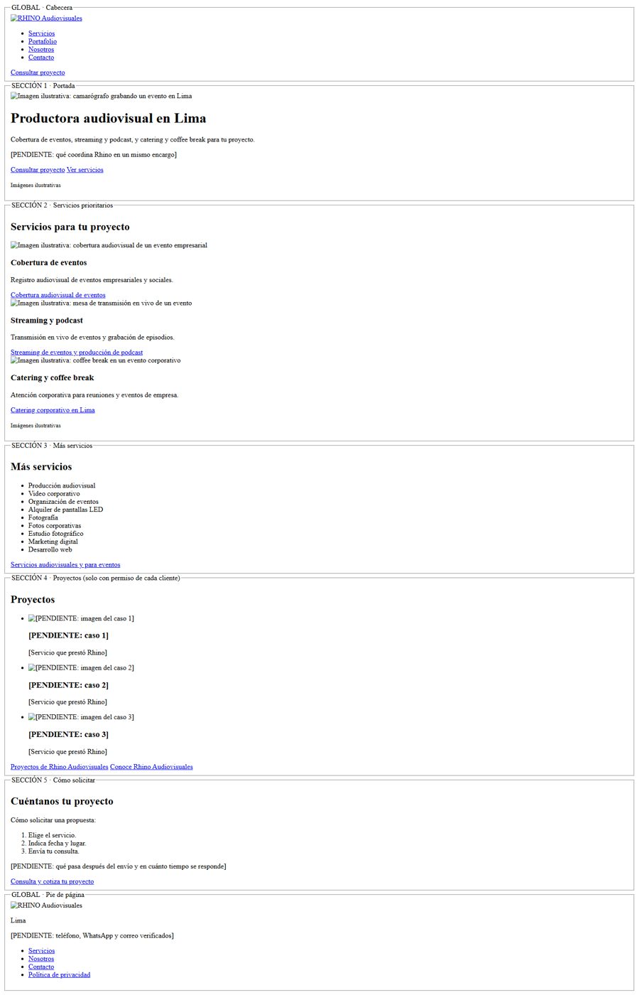
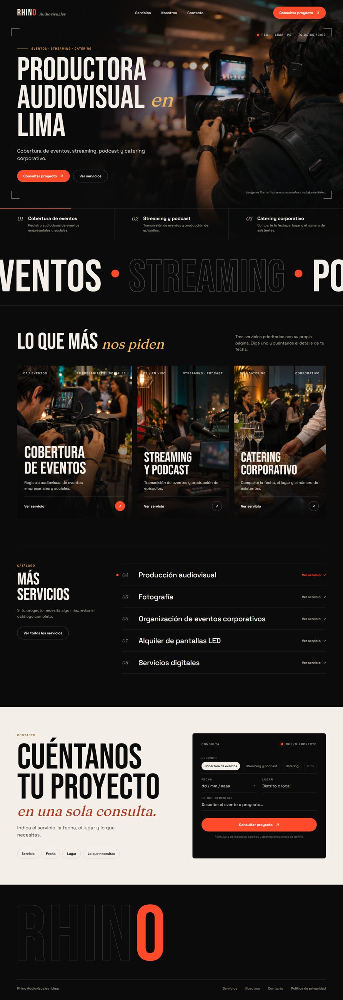
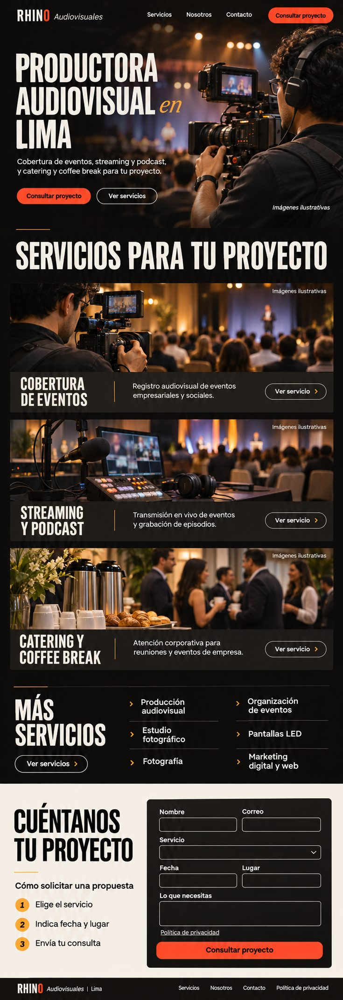
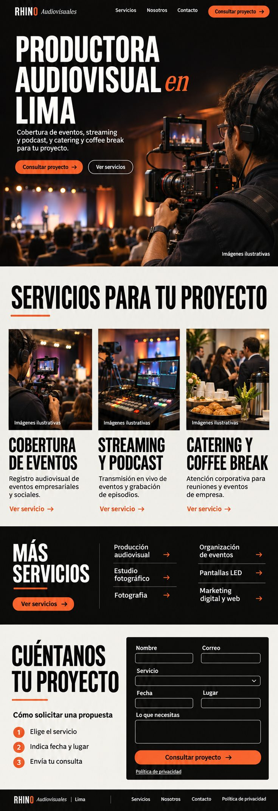
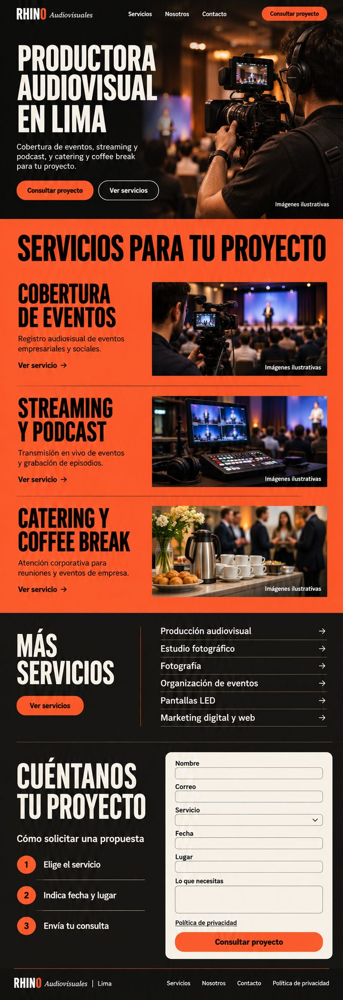

Productora audiovisual de Lima. Hoy los servicios prioritarios son tres: cobertura de eventos, streaming y podcast, y catering y coffee break. Además ofrece producción audiovisual, video corporativo, organización de eventos, pantallas LED, fotografía, estudio fotográfico, marketing digital y desarrollo web.
Empresas y personas de Lima que buscan una productora para un evento o proyecto concreto. Muchas llegan desde Google y desde anuncios, casi siempre en el celular. La página debe ayudarles a elegir el servicio que necesitan y pedir una cotización.
sitio/index.html y su captura, página 3). Ya está dividida sección por sección y lleva el texto definitivo.Son cinco secciones más la cabecera y el pie, en este orden. El orden y el contenido de cada sección están decididos. Puedes proponer cambios de composición, pero no quitar ni agregar secciones sin consultarlo.
| Sección | Qué tiene que lograr | Qué contiene |
|---|---|---|
| Cabecera | Orientar y dejar la cotización siempre a mano. | Logo · menú (Servicios, Portafolio, Nosotros, Contacto) · botón «Consultar proyecto». |
| 1 · Portada | Decir en segundos qué es Rhino y en qué ciudad trabaja. Es lo primero que se ve en el celular. | Título principal, subtítulo, frase sobre qué coordina Rhino (pendiente), botones «Consultar proyecto» y «Ver servicios», foto principal. |
| 2 · Servicios prioritarios | Destacar los tres servicios que más importan al negocio. Es la sección más importante después de la portada. | Tres bloques iguales: foto, nombre del servicio, una frase y un enlace a su página. |
| 3 · Más servicios | Mostrar que hay más oferta, sin competir con los tres prioritarios. | Lista de nueve servicios sin enlace y un solo enlace a la página de todos los servicios. |
| 4 · Proyectos | Dar prueba con trabajos reales. | Hasta tres casos (imagen, título, servicio), enlace al portafolio y enlace a «Nosotros». Condicionada: solo aparece si cada cliente dio permiso. Diséñala de modo que la página funcione igual si esta sección no existe. |
| 5 · Cómo solicitar | Que pedir una cotización parezca fácil. | Título, tres pasos numerados, frase sobre la respuesta (pendiente) y enlace a la página de contacto. |
| Pie | Cerrar con los datos de contacto y los enlaces legales. | Logo, «Lima», teléfono, WhatsApp y correo (pendientes de verificar), menú y Política de privacidad. |
/contacto/, donde está el formulario con estos campos: Nombre, Correo, Servicio, Fecha, Lugar y Lo que necesitas, más el enlace a la política de privacidad. Diseñar el formulario en la portada sería una decisión distinta, que habría que aprobar aparte.
Cuatro textos todavía dependen del dueño: la frase sobre qué coordina Rhino, los casos con permiso, los datos de contacto y el tiempo de respuesta. Reserva su espacio con una extensión razonable y no los rellenes con textos inventados, ni siquiera en el diseño final.
Así se ve hoy la página: solo HTML, sin estilos, y cada sección dentro de un recuadro. Las imágenes aparecen rotas a propósito porque todavía no hay fotografías. Tu diseño se aplicará sobre esta misma estructura.

sitio/index.html · captura a 1440 px.Usa estos textos tal como están. El título principal y los textos de los enlaces están escritos para Google: no los cambies sin consultar. Si un texto no te cabe, avísanos y lo resolvemos juntos.
| Sección | Elemento | Texto | Lleva a |
|---|---|---|---|
| Cabecera | Menú | Servicios · Portafolio · Nosotros · Contacto | /servicios/ · /portafolio/ · /nosotros/ · /contacto/ |
| Botón | Consultar proyecto | /contacto/ | |
| 1 · Portada | Título principal (H1, único en la página) | Productora audiovisual en Lima | — |
| Subtítulo | Cobertura de eventos, streaming y podcast, y catering y coffee break para tu proyecto. | — | |
| Botones | Consultar proyecto · Ver servicios | /contacto/ · /servicios/ | |
| Rótulo de la foto | Imágenes ilustrativas | — | |
| 2 · Prioritarios | Título | Servicios para tu proyecto | — |
| Servicio 1 | Cobertura de eventos — Registro audiovisual de eventos empresariales y sociales. | Enlace «Cobertura audiovisual de eventos» → /servicios/cobertura-de-eventos/ | |
| Servicio 2 | Streaming y podcast — Transmisión en vivo de eventos y grabación de episodios. | Enlace «Streaming de eventos y producción de podcast» → /servicios/streaming-y-podcast/ | |
| Servicio 3 | Catering y coffee break — Atención corporativa para reuniones y eventos de empresa. | Enlace «Catering corporativo en Lima» → /servicios/catering-corporativo/ | |
| 3 · Más servicios | Título | Más servicios | — |
| Lista (sin enlaces) | Producción audiovisual · Video corporativo · Organización de eventos · Alquiler de pantallas LED · Fotografía · Fotos corporativas · Estudio fotográfico · Marketing digital · Desarrollo web | — | |
| Enlace | Servicios audiovisuales y para eventos | /servicios/ | |
| 4 · Proyectos | Título y enlaces | Proyectos · «Proyectos de Rhino Audiovisuales» · «Conoce Rhino Audiovisuales» | /portafolio/ · /nosotros/ |
| 5 · Cómo solicitar | Título | Cuéntanos tu proyecto | — |
| Pasos | Cómo solicitar una propuesta: 1. Elige el servicio. 2. Indica fecha y lugar. 3. Envía tu consulta. | — | |
| Enlace | Consulta y cotiza tu proyecto | /contacto/ | |
| Pie | Datos y menú | RHINO Audiovisuales · Lima · Servicios · Nosotros · Contacto · Política de privacidad | … · /politica-de-privacidad/ |
La página de inicio debe pesar menos de 1 MB en el celular, sin contar videos, y cargar rápido: el contenido principal en menos de 2,5 s y sin saltos de diseño mientras carga. Esto pide:
Todavía no hay fotos reales de trabajos de Rhino. Diseña con imágenes de muestra rotuladas como ilustrativas y pensando en que después se reemplazarán por fotos reales de eventos, transmisiones y catering. El estilo no debe depender de una foto concreta.
Esta es la imagen de referencia que aportó el dueño. Le gusta el carácter cinematográfico, la tipografía fuerte y condensada en los títulos y los acentos cálidos (naranja y bermellón sobre negro). Tómala como punto de partida de tono, no como plantilla: su texto es anterior y no coincide con el contenido actual.

Tres direcciones generadas con IA a partir de la referencia y del texto actual. No son diseños aprobados: el dueño todavía no ha elegido, son de baja resolución y tienen erratas. Sirven para ver qué caminos ya se probaron.


